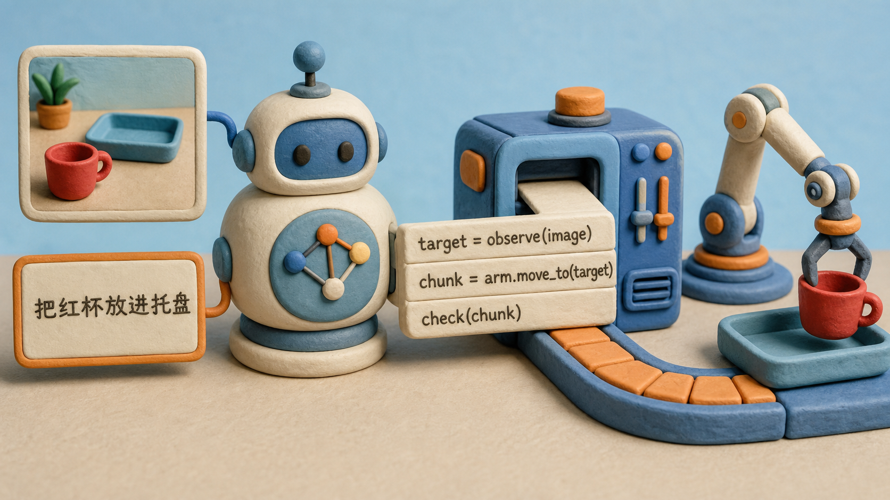
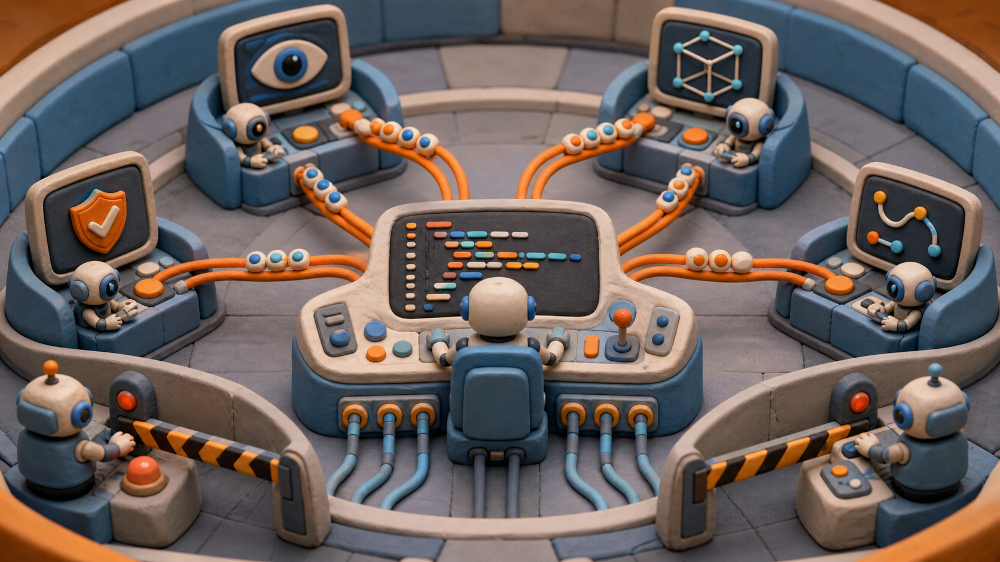
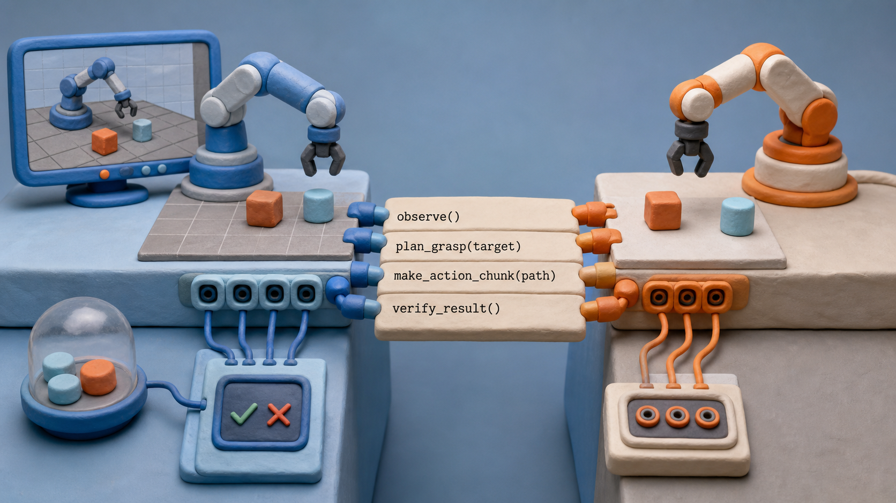
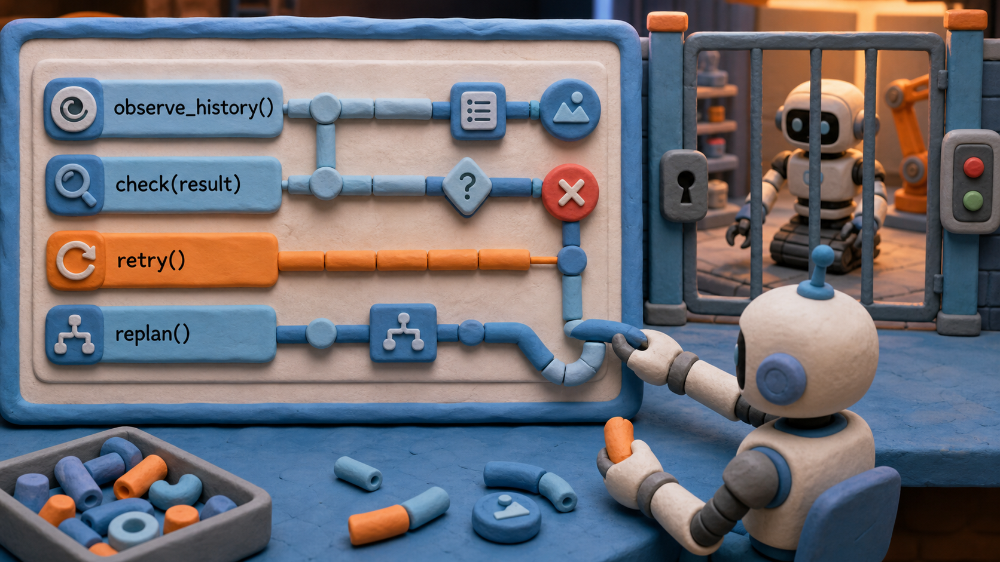
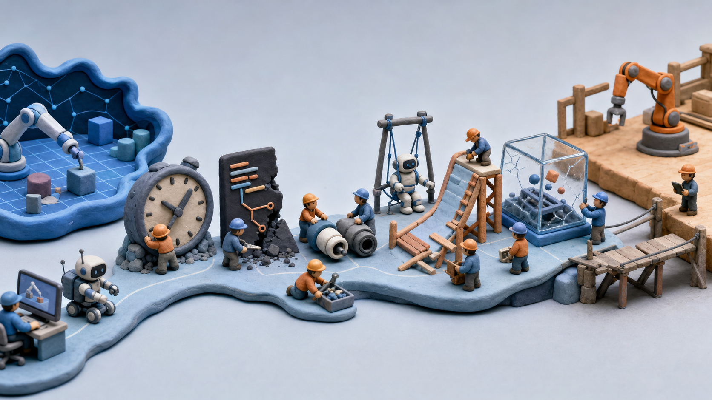

为什么现在讨论这件事
2026 年的机器人路线选择不只是“哪个模型更大”或“动作数据更多”。真正的问题是：当模型已经在 Agent Coding 中展示出强大的规划、分解、工具调用和纠错能力时，机器人系统应该怎样承接这种能力。
CapX 式路线的答案是：不要让模型只直接输出 Action Chunk，而是尽量让模型写策略代码。策略代码表达目标、 约束、观察、检查、恢复和执行节奏，再由底层动作接口生成短动作。
这不是说代码可以替代控制、动力学、视觉模型或真实硬件实验。它说的是：当模型参与机器人任务时， 代码比长动作序列更适合作为中间表达，因为代码更容易检查、修改、复用和监督。
Agent Coding 是重要信号
Agent Coding 的价值不只是代码生成，而是模型在代码环境中更自然地进行任务分解、工具调用、错误定位、 迭代修复和长链路规划。很多任务只要被转译成 coding 问题，模型能力就会被更完整地释放。
机器人任务也可以被转译：自然语言任务和视觉状态进入模型，模型不直接给关节轨迹，而是生成一段程序。 程序决定要看什么、移动什么、检查什么、失败时怎么处理。
动作序列往往只能在执行后看结果；代码可以在执行前审计。我们可以问：目标是否明确？约束是否足够？ 观察不足时是否会停？是否有重试和退出？这正是策略代码比长动作序列更适合作为中间层的原因。

从任务到代码到动作
整套系统可以分为四层：任务理解层、策略代码层、动作接口层、执行反馈层。Code Agent 不应该承担所有层的工作， 而是在策略代码层发挥最大作用。
任务理解层
把语言指令、图像观察和环境状态整理成目标、约束和成功条件。例如“拿起杯子”要变成目标物体、抓取姿态、避障区域和完成标准。
策略代码层
生成可读程序：什么时候重新观察、什么时候求解路径、什么时候执行短动作、什么时候停止。它不是低层控制器，而是任务策略的可执行表达。
动作接口层
把局部目标变成短动作、路径或控制参数，并暴露碰撞、力反馈、失败信号和停止能力。策略代码调用它，而不是替它实现所有控制细节。
执行反馈层
执行后，系统重新观察结果，并触发继续、重试、换视角、降级或停止。机器人不是一次性生成完整长计划，而是短执行、再检查、再修正。
Action Chunk 的重新定位
Action Chunk 是一段可执行动作序列。它可以直接由模型输出，也可以由策略代码在局部约束下生成。当前很多范式近似于 “图像 + 指令 -> 动作片段”。
直接输出动作有价值，但接口很窄。模型把目标、约束、恢复策略都压缩进轨迹里，外部很难知道它为什么这样动， 也很难在执行前审计。
在 CapX 路线里，Action Chunk 仍然存在，但它变成策略代码调用动作接口后的产物。模型可以先写出目标、约束和检查逻辑， 再生成短动作。
def pick_object(task, vision, left_arm):
target = vision.find(task.object_name)
if not target.visible:
return request_reframe(reason="target is not visible")
grasp = vision.estimate_grasp(target)
path = left_arm.solve_path(
target_pose=grasp.pose,
constraints=["avoid_collision", "limit_force", "keep_camera_clear"],
)
if not path.safe:
return stop(reason=path.failure_reason)
chunk = left_arm.make_action_chunk(path, horizon="short")
result = left_arm.execute(chunk)
if not vision.verify(task.success_condition):
return retry_or_replan(result)
return done()| 维度 | 直接输出 Action Chunk | 策略代码生成 Action Chunk |
|---|---|---|
| 表达对象 | 动作轨迹本身 | 目标、约束、检查逻辑和短动作生成过程 |
| 可审计性 | 执行前很难知道为什么这样动 | 执行前可以检查代码是否处理了风险 |
| 监督信号 | 主要看动作结果和成功失败 | 可以监督中间状态、约束表达、恢复策略和动作结果 |
| 迁移能力 | 容易绑定到特定平台和轨迹分布 | 可以替换底层动作接口，保留高层策略结构 |
安全任务允许长思考
很多机器人任务不是极速反应任务，而是安全场景：可以先观察、推演、检查，再执行短动作。长思考在这里不是拖累， 而是安全机制。
一个更合适的节奏是：观察多视角状态；生成策略代码；检查目标和风险；执行短动作；重新观察并决定下一步。 不要一次性押注长动作。
短 Action Chunk 把风险限制在局部范围。每一步之后系统都有机会检查、修正、停止，避免长序列把错误扩大。
人类技能学习给出的控制直觉
人类学习技能并不总是连续精细控制每一个关节。学习网球时，教练常要求固定上身和手部姿态，通过脚步移动迎击。 发球时手势更固定。很多技能学习不是全关节端到端输出，而是稳定姿态、关节组合和触发时机。
机器人任务里也常见某些关节保持姿态，另一些关节负责接近、对齐或执行。策略代码可以显式表达 “固定、等待、触发、释放”。
这支持代码路线的原因很直接：代码天然适合表达哪些部件固定、哪些部件行动、什么条件触发下一步。 这比把所有自由度都压进一个动作输出更容易解释和迁移。
并行模块控制
一个机器人可能有左手、右手、头部、手部相机和其他传感器。与其让一个输出管所有自由度，不如让多个局部代码块负责不同模块。
负责接近、抓取、抬起，只操作左手相关关节，并在局部失败时请求重规划。
负责看遮挡、偏移和目标丢失，必要时发送 pause、retry、reframe 或 abort 信号。
如果右手可以移动，它可以把相机朝向左手操作物体，用来补盲、三角定位或第二视角确认。
模块之间不需要共享所有内部状态，可以通过简单信号协作：pause、retry、reframe、confirm、abort。 关键是知道什么时候继续、暂停、让出控制或终止。
这里可以借一个局部神经中枢的比喻：不是所有控制都必须回到单一大脑。许多局部执行器和观测器组成代码 block， 既能安全完成子动作，也能保持敏捷。它甚至可能是系统最终超人的一个原因：并行流程可以比单一路径更快地观察、检查和修正。

视觉伺服是必须测量的瓶颈
策略代码路线依赖视觉模型能理解画面，并把视觉元素转成行动建议。现在公开多模态模型仍未完全达到这个水平。
在一些测试里，模型对画面中物体的平面位置可能已有较明确感知，例如知道怎么平移让物体居中，或者让物体完整出现在画面里。 但当任务变成旋转到特定侧面或特定角度时，表现仍可能接近随机游走。
模型是否知道应该向哪个方向移动相机或末端执行器，让目标进入合适位置。
模型是否能从当前画面推断需要怎样旋转，才能到达物体的特定侧面或角度。
模型是否能识别遮挡、请求换视角，并在多个视角之间保持一致理解。
这个 benchmark 很重要。如果视觉伺服能力不足，策略代码会写出看似合理但执行漂移的计划。 benchmark 能告诉我们哪些部分交给模型，哪些必须交给几何、控制或额外传感器。
仿真监督与 sim-to-real
如果模型输出代码，仿真环境监督的不只是动作是否成功，还包括中间状态、约束表达、失败恢复和代码是否依赖捷径。
从粗到细可以监督：任务成功、步骤顺序、约束满足、代码可迁移性。每一层都比单纯动作结果提供更多反馈。
代码可能减少 sim-to-real gap 的原因是：代码通常较短，且不鼓励模型记住固定动作序列。它更像学习求解过程， 而不是过拟合仿真轨迹。可审计代码也更容易发现仿真 shortcut。
需要审计的失败包括：目标错、约束缺失、观察不足、仿真捷径。每类都可以设计奖励或惩罚，让训练过程不只关注最终是否成功。

审计应该发生在动作之前
机器人动作一旦执行就会影响物理世界，所以审计应尽量发生在执行前。策略代码给了一个可检查对象。
- 目标是否明确到物体、姿态、位置和完成条件？
- 观察不足时是否会重新观察、换视角或停止？
- 是否有碰撞、速度、力、距离或 workspace 边界约束？
- 执行失败后是重试、换视角、降级，还是停止？
- 有没有依赖仿真内部状态或固定轨迹的可疑 shortcut？
审计不是让机器人变慢到不可用，而是决定哪些动作可以自动执行、哪些需要重新观察、哪些必须人工确认或停止。

路线成立的前提条件
模型不必完美，但要能稳定识别目标、遮挡、粗位置和任务相关状态。否则策略代码会建立在不可靠观察上。
底层系统需要提供可约束路径求解、短动作执行、碰撞/力反馈和安全停止。策略代码调用这些能力，而不是凭空生成物理控制。
每次任务要记录观察、代码、动作、反馈、失败和修正。没有记录，就很难监督、审计和迭代。

下一步要建什么
CapX 总论后续可以拆成四个真正独立的研究入口：Action Chunk 作为窄 API Code Agent、视觉伺服 benchmark、 并行模块控制、仿真监督与策略代码。但在第一版博客里，它们先被放在一篇主文里，保持论证连续。
近期验证可以按这个顺序推进：先验证视觉理解、动作接口和反馈记录；再做短任务 demo；再设计 benchmark 和仿真监督； 最后看是否能迁移到不同模块或平台。
这条路线的优势不在于让模型跳过机器人学，而在于把模型最强的 coding 能力放在合适位置： 生成策略、组织约束、接受反馈、逐步改进。